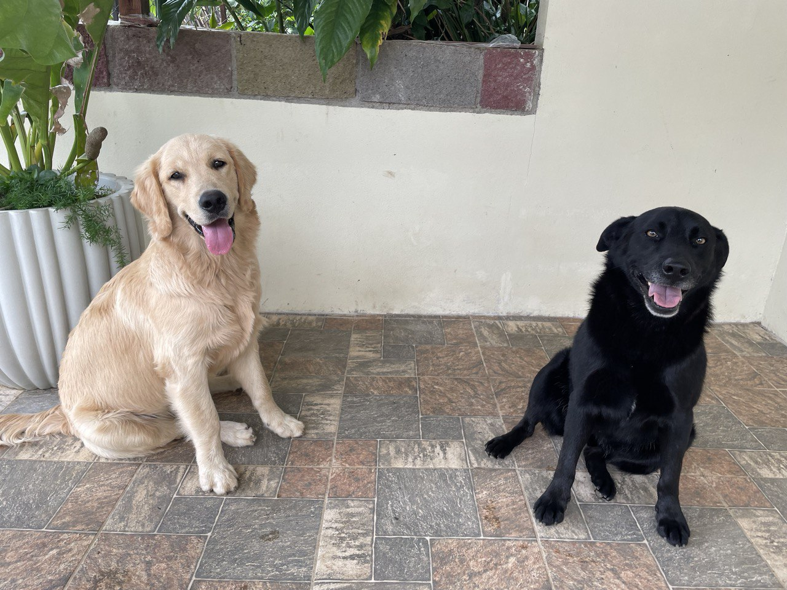

Mi pagina personal
Soy Nathalia Rodriguez Alfaro, estudiande de la carrera Computacion con Varios Enfasis en la Universidad de Costa Rica. Tengo dos perritos, Archie y Nala. Disfruto caminar con ellos, y pasar tiempo con las personas que quiero.
A lo largo de la carrera se han desarrollado trabajos como: